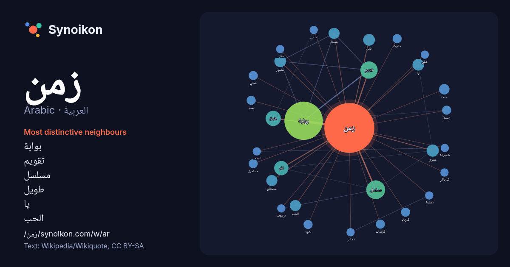

العربية · Arabic · word of the day list
زمن
“time” · The words found around it in 681 instances from Arabic Wikipedia, Wikiquote.

Most distinctive neighbours
- بوابة 94×
- تقويم 18×
- مسلسل 14×
- طويل 13×
- يا 8.4×
- الحب 8.4×
- عصور 7.8×
- مصري 7.1×
- مستغرق 7.0×
- مكوث 7.0×
- فراشات 6.9×
- خطي 6.5×
- زمنية 6.0×
- برغوت 6.0×
- حديثة 6.0×
- تضاؤل 6.0×
- امتلاء 6.0×
- جيلي 5.9×
- تلاشي 5.9×
- عجائب 5.9×
× = how many times more often than in general Arabic Wikipedia text.
Most frequent neighbours
- بوابة 108
- مسلسل 26
- تقويم 22
- طويل 17
- اخر 15
- تاريخ 15
- فيلم 12
- فترة 11
- قرن 11
- مصري 11
- عبر 10
- عصور 10
- علم 10
- ناس 10
- يا 10
- الحب 9
- حديثة 9
- لغة 9
- مصطلح 9
- حدث 8
In context
- مصطلح الزمن الأعصى على التعريف، فالزمن أمر نحس به أو نقيسه أو نُخمِّنه، وهو يختلف باختلاف وجهة النظر التي ننظر بها بحيث يمكننا الحديث عن زمن نفسي أو زمن فيزيائي Wikipedia snippets · زمن
- زمن منطقة المحيط الهادئ، أو التوقيت الباسيفيكي، (Pacific Time Zone) هي منطقة زمنية في أمريكا الشمالية ترمز بـ PST. يُحدّد زمن منطقة المحيط الهادئ بطرح Wikipedia snippets · زمن منطقة المحيط الهادئ
- زمن النمور O Tempo dos Leopardos (البرتغالية) Vreme leoparda (الصربية الكرواتية) تعديل - تعديل مصدري - تعديل ويكي بيانات زمن النمور (الصربية: Време леопарда/Vre … Wikipedia snippets · زمن النمور (فلم)
- جيران آخر زمن هو فيلم مصري إنتاج عام 1989 بطولة لبلبة ، نجاح الموجي ، بدر الدين حمجوم ، ميمي جمال ومن إخراج شريف حمودة . يتعرف (هشام) على جاره الجديد Wikipedia snippets · جيران آخر زمن (فلم)
- زمن إعادة امتلاء الشعيرات(1) هو الوقت الذي يأخذه اللون ليعود للشعيرات الدموية الخارجية بعد ضغط تسبب بالابيضاض. يمكن قياس زمن عود امتلاء الشعيرات من خلال Wikipedia snippets · زمن إعادة امتلاء الشعيرات
- الزمن في النحو هو وقت وقوع الفعل. وتقسم الأفعال نسبة إلى الزمن ومن حيث الصيغة إلى اثنين هما الفعل الماضي والفعل المضارع والمضارع يشمل الحال والاستقبال Wikipedia snippets · زمن (نحو)
- صحوة زمن، مسلسل خليجي يتكون من 30 حلقة. وهو مسلسل درامي اجتماعي تراجيدي صور ما بين الكويت و الأردن يتحدث عن نورية سعاد عبد الله الأم والزوجة القاسية مع Wikipedia snippets · صحوة زمن (مسلسل)
- زمن الرفاق هو فيلم مغربي من إخراج محمد الشريف الطريبق سنة 2008، وبطولة كل من فرح الفاسي، محمد عسو، سعيد الحجوي، وآخرين. سيناريو الفيلم مُقتبس من مذكرات Wikipedia snippets · زمن الرفاق
More Arabic words
- أغنية
- إله
- تاريخ
- جبل
- جرس
- جزيرة
- جسر
- حديقة
- حصان
- حقيقة
- حياة
- خبز
- خريطة
- خريف
- ذهب
- ساعة
- شاي
- شتاء
- صحة
- صحراء
- صمت
- صيف
- طبيعة
- طريق
- طعام
- ظل
- عائلة
- عاصفة
- عسل
- علم
- عمل
- غابة
- فن
- قطار
- قطة
- قلب
- قوة
- كلب
- لغة
- ماء
- مال
- مدينة
- مرآة
- مطر
- ملح
- مناخ
- موت
- نجم
- والدة
Precomputed on 2026-10-09 with default settings (±5 words, medium corpus). The interactive map can refresh it with live data.